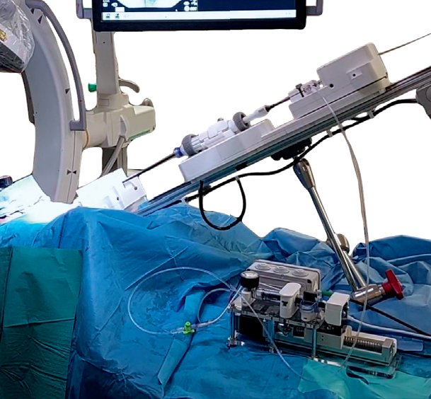

Commercial and clinical-stage systems · caranx_smits2025
Caranx TAVI robot
Caranx Medical robotic instrument manipulator for transcatheter aortic valve implantation

1 / 3


- Family
- Commercial and clinical-stage systems (commercial)
- Devices
- Edwards SAPIEN 3 delivery system (flex catheter and handle), intraventricular guidewire, balloon inflation device (Results, Fig. 2)
- Degrees of freedom
- N.R. as a number; four drivers: catheter driver, handle driver (flex and balloon fine-positioning wheels), guidewire driver, inflation driver
- Push
- Friction rollers
- Twist
- Handle or knob
- Tested up to
- Animal
- Sim-to-real
- None found — No simulation-trained controller found for this robot.
Testing
- Highest level
- Animal
- What was tested
- 3 in-vivo porcine experiments with 20 navigation and balloon-inflation sequences (no implant) and one robot-assisted TAV implantation in a pig; phantom operator study and level-3 supervised autonomy with camera and fluoroscopy feedback (Results)
- Key numbers
- fluoroscopy closed-loop positioning 30 runs without failure, final error 0.5 mm median, min-max range 1.03 mm; calibration about 5 s; autonomy up to 2x accuracy and 4x precision vs manual on phantom (Results)
Mechanism
- Push (translation)
- friction-roller (friction-wheel transmissions for delivery catheter and guidewire, pretensioned by one screw)
- Twist (rotation)
- handle wheels through geared transmissions; catheter roll N.R.
- Device range
- one delivery-system type per interface (a reusable base with per-device interfaces envisioned)
- Target anatomy
- transfemoral TAVI (aortic valve)
Sensing and interface
- Force sensing
- in-line pressure sensor for pressure-monitored balloon inflation; instrument force sensing N.R.
- Leader and haptics
- single wireless handheld user-input device; teleoperation from a shielded room
- Imaging
- fluoroscopy (wireless pedal) and camera test bench; neural-network feature tracking for closed-loop positioning
- Sterility
- plastic transmission covers on handle wheels; quick-release thumbscrews and spring-loaded sliders; N.R. further
Size
- Footprint (mm)
- N.R.
- Mass (kg)
- N.R.
Simulation
- Simulation model
- none found
- Sim-trained controller
- none found (network trained on real fluoroscopy data)
Versions
- Lineage
- Oct 2023 hybrid-room phantom tests; Dec 2023 - Feb 2024 three in-vivo porcine experiments (CERIMED Marseille); 15 Mar 2024 robot-assisted TAV implantation in a pig; 2025 FRAI paper
Sources
- Towards autonomous robot-assisted transcatheter heart valve implantation: in vivo teleoperation and phantom validation of AI-guided positioning · Frontiers in Robotics and AI, 2025 · doi:10.3389/frobt.2025.1650228 [smits2025_towards]
Notes
- Notes
- Pre-market company prototype (not in robots_A4). CC BY 4.0 paper.
This record
- Read level
- full
- Picture
- smits2025_tavi_FRAI Fig. 2 (left panel, in-vivo set-up 15 Mar 2024), robotic instrument manipulator region ↗ — licence: CC BY 4.0; grade B
- Picture changes
- the PDF splits the photo into 3 raster tiles (705x430, 705x288, 284x715): stitched at native size (no vector annotations included), cropped to the manipulator
- Found by
- gap: Gap searches for robots the other searches missed.
- Data
- JSON · YAML:
records/robots/caranx_smits2025.yaml - Correction
- Suggest a correction [repository not created yet]